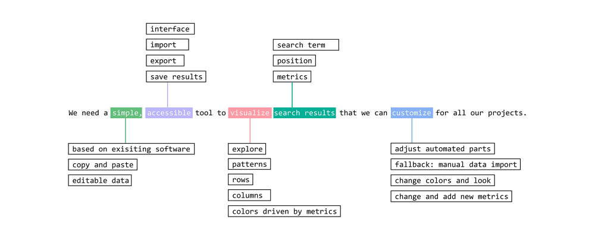
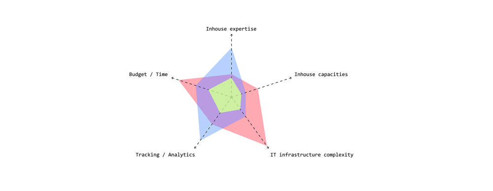
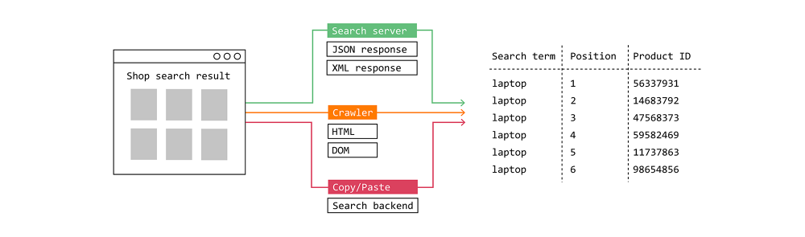
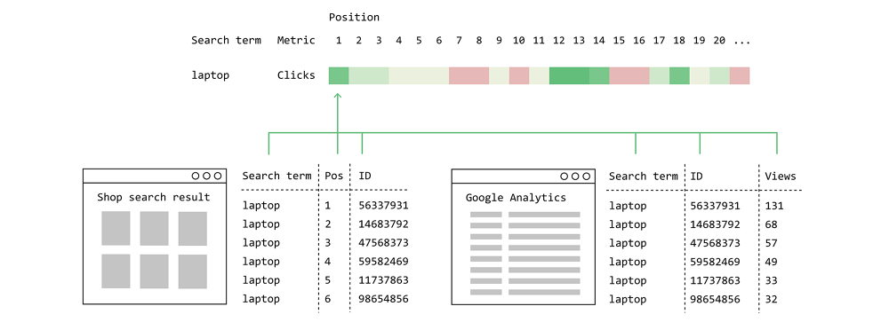
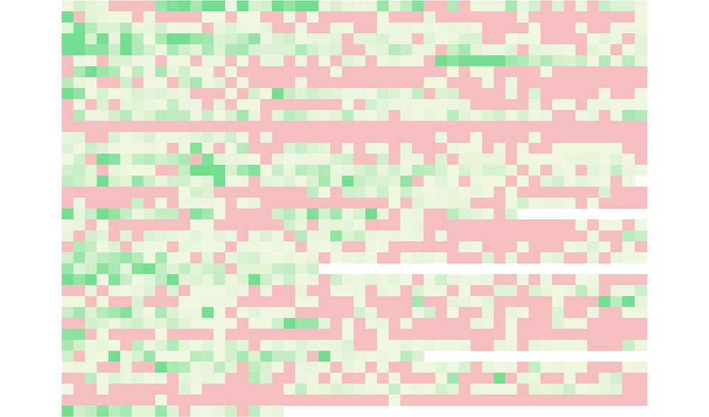
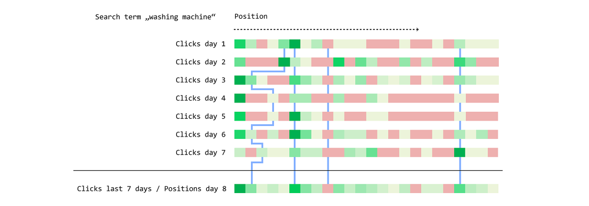
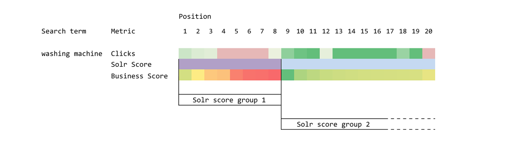
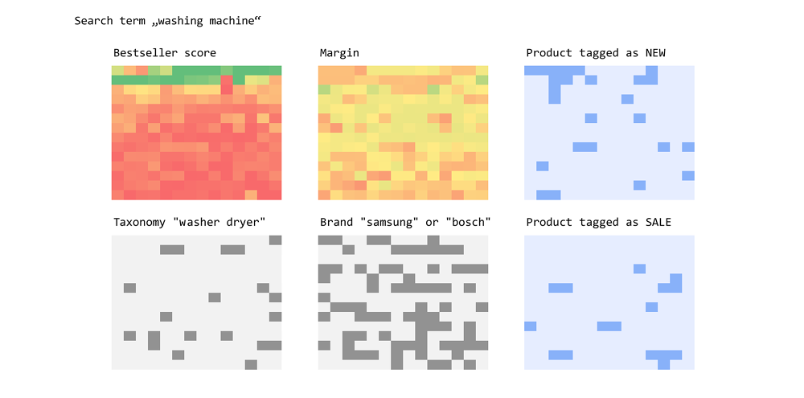
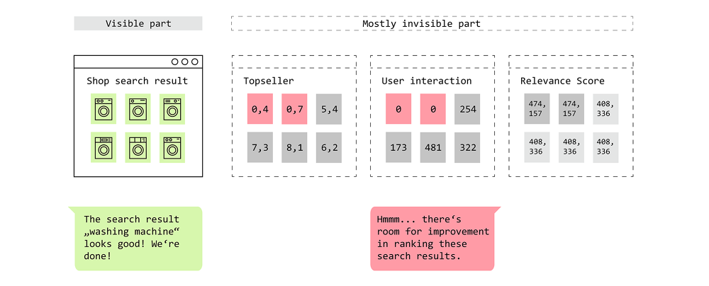

Haystack Europe 2018









I participated in Haystack Europe 2018 in London as a speaker presenting some insights into visualizing search results in e-commerce. Here is a excerpt of my designs to explain our approach to combine position data with other information about products. Abstract: "Demystifying onsite search by creating transparency for our clients is our main focus and motivation. Our clients face challenges like a lack of transparency in onsite search especially in terms of ranking and search result quality. There might be a sudden change in staff managing onsite search, a general lack of internal ressources dedicated to search and old, undocumented artifacts that can lead to confusion, frustration and wrong assumptions.
Over the years we developed a way of analyzing and visualizing relevance and ranking, to enable us and our clients to actually see how search results are ranked. By combining it with tracking data we can further explore how users interact with specific search results. We do this in a very low-tech way, so the results are highly accessible and our method can be used in many different environments and time budgets. Even without additional tracking data it’s worth a look. Our talk will provide insights into our process and we’ll show you what we’ve learned from it so far. We think it’s incredibly useful to visualize information to enable everyone on the project to discover patterns and to create transparency and understanding. No matter if you are an onsite search expert or not."